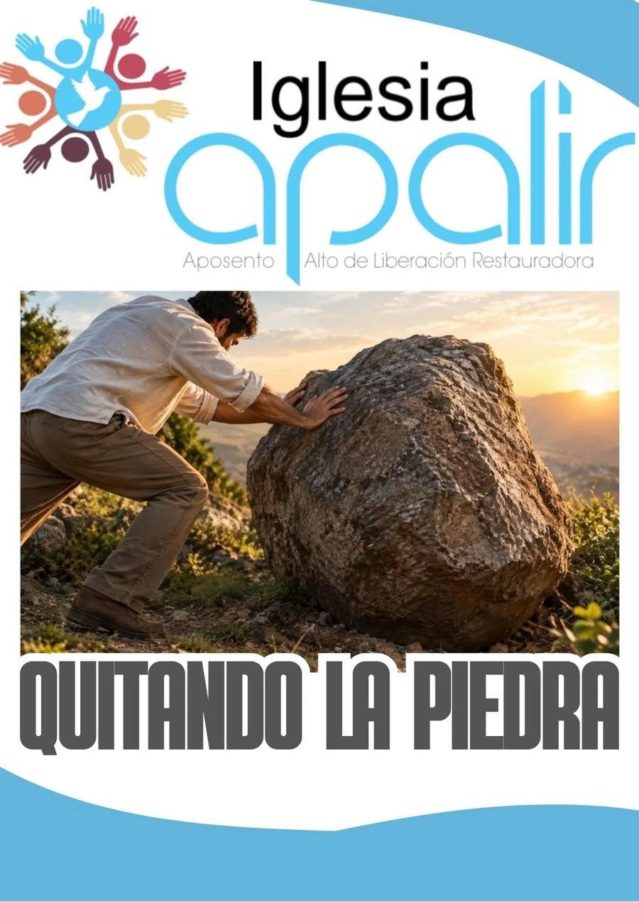
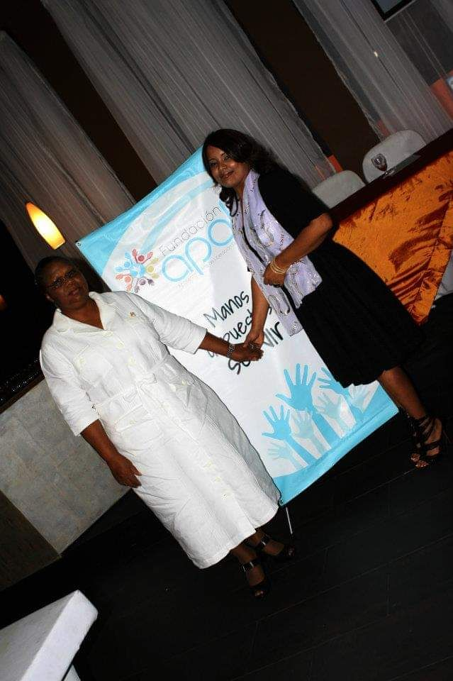
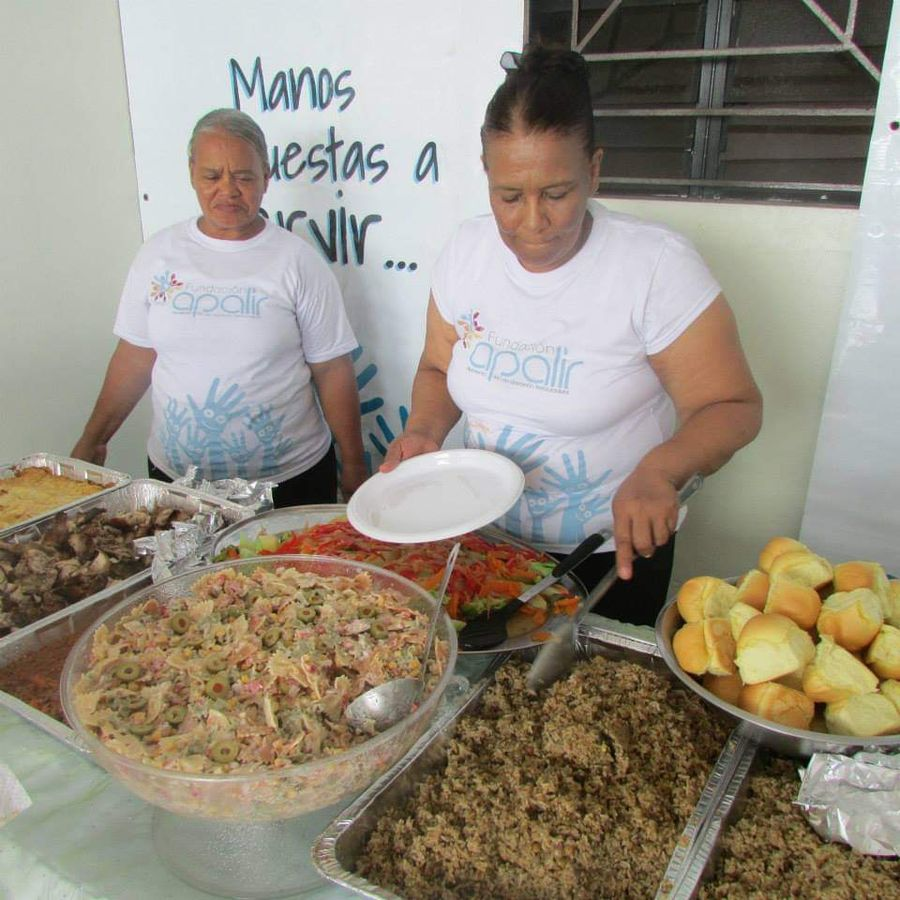
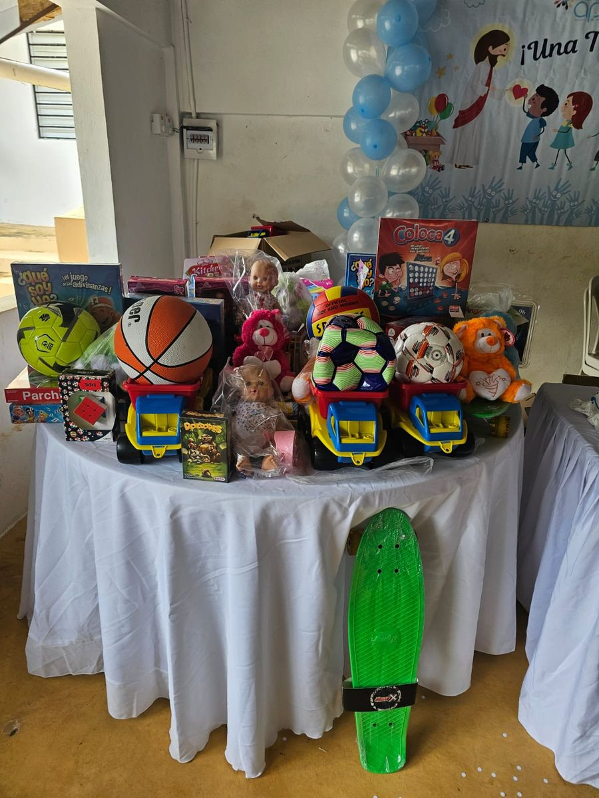

Aposento Alto
Un lugar de oración y comunión, como los discípulos que perseveraban unánimes esperando la promesa del Espíritu.
Hechos 1:14Somos el Aposento Alto de Liberación Restauradora: una familia que se reúne para adorar, orar y crecer en la Palabra.

Nuestro nombre resume lo que creemos y vivimos cada vez que nos reunimos.
Un lugar de oración y comunión, como los discípulos que perseveraban unánimes esperando la promesa del Espíritu.
Hechos 1:14Creemos en el poder de Cristo para romper cadenas y dar verdadera libertad a quien se acerca a Él.
Juan 8:36Dios restaura vidas, familias y corazones. Aquí encontrarás una familia que te recibe y camina contigo.
Salmo 23:3
La Pastora Maribel guía a la familia Apalir en la oración y en la Palabra, y lleva la obra de la iglesia a la calle a través de la Fundación Apalir: alimentos, salud y alegría para quienes más lo necesitan.
Conoce la Fundación

 Ver volante completo (se abre en una pestaña nueva)
Ver volante completo (se abre en una pestaña nueva)
Ven a ver la gloria de Dios en tu vida.
Este culto ya se realizó. Pronto anunciaremos la próxima fecha; escríbenos para enterarte.
¿No te he dicho que si crees, verás la gloria de Dios?Juan 11:40
La Fundación Apalir lleva el amor de Cristo a la práctica: alimentos, salud, útiles escolares y alegría para envejecientes, familias y niños de nuestras comunidades.

Visitamos a personas mayores y encamadas con alimentos, pañales y artículos de higiene.

Una tarde de alabanza, comida y regalos para cientos de niños y sus familias.

Mochilas y útiles escolares para que ningún niño empiece el año sin lo necesario.

Consultas, toma de presión y medicamentos gratuitos en las comunidades.

Cocinamos y servimos platos calientes en cada actividad de la fundación.

Regalos que llevan una sonrisa a niños de familias de escasos recursos.
Cada aporte a la Fundación Apalir llega a un envejeciente, una familia o un niño. Si deseas donar alimentos, ropa o juguetes, escríbenos y coordinamos la entrega.
Ven tal como eres. Si tienes preguntas antes de llegar, escríbenos o llámanos.